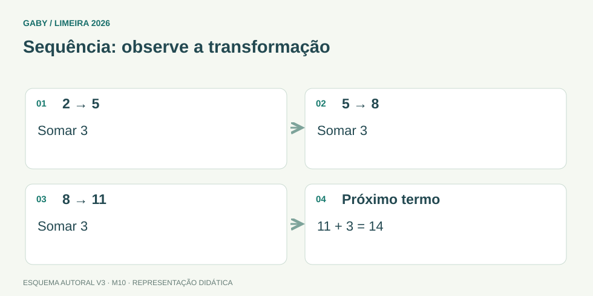

Objetivos do módulo
- Organizar informações de relações arbitrárias.
- Deduzir apenas o que é necessário.
- Identificar padrões de sequências.
- Descobrir o padrão por diferenças, razões, recorrência e posições alternadas.
- Usar o termo geral e a soma da progressão aritmética e o termo geral da progressão geométrica.
- Resolver sequências cíclicas e problemas de calendário pelo resto da divisão.
- Posicionar pessoas e objetos com restrições, por tabela, hipótese e eliminação, inclusive em problemas de verdade e mentira.
- Resolver filas, giros, percursos, invariantes, máquinas de operações, códigos e contagem de pares.
Sequência: observe a transformação

Descrição em texto do esquema
- 2 → 5: Somar 3
- 5 → 8: Somar 3
- 8 → 11: Somar 3
- Próximo termo: 11 + 3 = 14
Oficina visual · aplique o esquema
Na sequência 3, 6, 12, 24, qual é o próximo termo pela regra de duplicação?
Atividade autoral complementar da V3. Registre sua resposta; a resolução está no arquivo de gabarito e revisão.
Mapa do conteúdo
- 1. Transforme texto em estrutura
- 2. Condições e restrições
- 3. Sequências numéricas
- 4. Sequências figurais
- 5. Progressão aritmética (PA)
- 6. Progressão geométrica (PG)
- 7. Calendário e dias da semana
- 8. Filas, orientação e percursos
- 9. Consecutivos, paridade e invariantes
- 10. Máquinas de operações e códigos
- 11. Contagem de pares: todos contra todos
1. Transforme texto em estrutura
Questões de relações ficam mais simples quando você cria tabela, fila, desenho ou símbolos. Separe fato dado de conclusão deduzida. Não acrescente suposições.
Escolha a estrutura certa
| Tipo de informação | Estrutura recomendada |
|---|---|
| Ordem: antes/depois, maior/menor, à frente/atrás | Cadeia com setas, numa só direção |
| Lugares com restrições: assentos, dias, posições de uma senha | Casas numeradas 1, 2, 3… e lista dos casos possíveis |
| Associação entre dois grupos: pessoa × cargo, pessoa × cor | Tabela de dupla entrada com ✓ e ✗ |
| Família | Árvore de parentesco |
| Direções e percursos | Rosa dos ventos ou eixos norte–sul e leste–oeste |
Ordenação por comparações (transitividade)
Relações como “é mais alto que”, “chegou antes de” e “ficou à frente de” são transitivas: se A vem antes de B e B vem antes de C, então A vem antes de C. Por isso várias comparações podem ser encaixadas numa única cadeia.
- Reescreva todas as comparações no mesmo sentido. “B é mais baixo que A” vira “A é mais alto que B”.
- Encaixe as comparações umas nas outras, formando a cadeia.
- Leia na cadeia a posição pedida. Se dois elementos não estão ligados por nenhuma cadeia, a ordem entre eles não é determinada.
Exemplo: Ugo chegou antes de Pedro; Rita chegou depois de Pedro; Téo chegou depois de Rita. Reescrevendo tudo como “antes de”: Ugo → Pedro → Rita → Téo. A ordem de chegada é Ugo, Pedro, Rita, Téo; a terceira a chegar foi Rita.
Cuidado: de “Lia é mais velha que Mara” e “Lia é mais velha que Nina” não se conclui quem é mais velha entre Mara e Nina: as duas comparações partem de Lia e não formam cadeia. Quando uma condição fixa uma posição (“Davi é o primeiro”), coloque esse elemento e encaixe a cadeia nas posições que sobram.
Relações de parentesco
Monte a árvore da família: pais em cima, filhos embaixo, irmãos lado a lado. Depois leia o parentesco subindo e descendo pelas linhas da árvore.
| Parentesco | Como reconhecer na árvore |
|---|---|
| Irmão ou irmã | Tem os mesmos pais (mesma geração) |
| Avô ou avó | Pai ou mãe do pai ou da mãe (duas gerações acima) |
| Tio ou tia | Irmão ou irmã do pai ou da mãe |
| Sobrinho ou sobrinha | Filho ou filha de um irmão ou irmã |
| Primo ou prima | Filho ou filha de um tio ou tia (mesma geração, pais irmãos) |
| Neto ou neta | Filho ou filha de um filho ou filha |
Exemplo: Sônia e Paulo são irmãos; Ricardo é filho de Sônia e Vera é filha de Paulo. Paulo é irmão da mãe de Ricardo, logo é tio de Ricardo, e Ricardo é sobrinho de Paulo. Ricardo e Vera são filhos de irmãos: são primos. A mãe de Sônia e Paulo é avó dos dois primos.
2. Condições e restrições
Expressões como “à esquerda”, “antes”, “não pode”, “exatamente um”, “pelo menos” precisam ser preservadas literalmente. Uma dedução é válida quando ocorre em todas as configurações que respeitam as condições.
Posicionamento com restrições: fixe o que é certo e teste os casos
- Desenhe as posições numeradas: cadeiras 1 a 4 da esquerda para a direita, dias da semana, posições de uma senha.
- Coloque primeiro o que uma condição fixa diretamente (“a letra C é a 2ª”, “Ana fica no meio”).
- Use as restrições de vizinhança e de ordem para eliminar posições impossíveis.
- Se ainda houver mais de uma possibilidade, teste cada caso que sobrou e descarte o que viola alguma condição.
- Responda só o que vale em todos os casos que restaram. Se dois casos válidos divergem na pergunta, a resposta é “não se pode determinar”.
Exemplo: Gil, Hana, Ivo e Júlia ocupam as cadeiras 1 a 4, da esquerda para a direita. Ivo senta imediatamente à esquerda de Hana; Gil não senta em uma ponta; Júlia não ocupa a cadeira 1. Gil só pode estar na cadeira 2 ou na 3.
- Caso Gil na cadeira 2: o par Ivo–Hana precisa de duas cadeiras vizinhas livres, que só podem ser 3 e 4. Júlia ficaria na cadeira 1, o que é proibido. Caso eliminado.
- Caso Gil na cadeira 3: o par Ivo–Hana ocupa as cadeiras 1 e 2, e Júlia fica na 4. Todas as condições são respeitadas.
Única arrumação: Ivo, Hana, Gil, Júlia. Observe a diferença: “imediatamente à esquerda” exige cadeiras vizinhas; “à esquerda”, sozinho, admite cadeiras afastadas. Use a esquerda e a direita do ponto de vista indicado no enunciado; sem indicação, use a numeração da esquerda para a direita do desenho.
Tabela de dupla entrada
Quando cada pessoa recebe exatamente um item de outro grupo (cargo, cor, cidade), monte uma tabela com pessoas nas linhas e itens nas colunas. Marque ✗ no que uma pista proíbe e ✓ no que ela garante. Cada linha e cada coluna têm exatamente um ✓: quando uma casa recebe ✓, as demais casas da mesma linha e da mesma coluna recebem ✗.
Exemplo: Ana, Bruno e Célia são auxiliar, secretário e técnico, um cargo para cada. Pistas: (1) Ana não é auxiliar; (2) Bruno não é técnico; (3) Célia não é secretária nem técnica.
| Pessoa | Auxiliar | Secretário | Técnico |
|---|---|---|---|
| Ana | ✗ (pista 1) | ✗ (coluna já ocupada) | ✓ |
| Bruno | ✗ (coluna já ocupada) | ✓ | ✗ (pista 2) |
| Célia | ✓ | ✗ (pista 3) | ✗ (pista 3) |
Ordem de leitura: a linha de Célia só deixa Auxiliar livre (✓). Com a coluna Auxiliar ocupada, Bruno não é auxiliar; como também não é técnico, Bruno é secretário. Sobra técnico para Ana. Quando as pistas envolvem quantidades (“X teve 15 a mais que Y”), liste antes os pares de valores da lista que diferem exatamente 15 e teste só esses.
Dedução por hipótese e contradição
Quando nenhuma pista fixa uma posição, faça uma suposição (hipótese) e siga as consequências. Se a hipótese leva a uma contradição, isto é, a duas exigências que não podem valer ao mesmo tempo, ela é falsa e pode ser eliminada. Se sobra uma só possibilidade, ela é a resposta.
Exemplo: as reuniões X, Y e Z ocorrem de manhã, à tarde e à noite, uma por turno. Y não é à noite; X ocorre depois de Z; Z não é de manhã. Hipótese: Z à noite. Então X, que vem depois de Z, ficaria sem turno: contradição. Logo Z é à tarde, X (depois de Z) é à noite e Y fica de manhã.
O mesmo método serve para regras que valem para todos os pares de um grupo (por exemplo, uma regra sobre quantos contatos em comum cada par ligado deve ter): suponha uma ligação nova, confira a regra em cada par já ligado e elimine a ligação que a viola.
Verdades e mentiras
Nesses problemas, cada afirmação é verdadeira ou falsa, e a falsidade também informa: se uma frase é falsa, a negação dela é verdadeira (se “Foi Sara” é falsa, então não foi Sara). Quem mente diz algo falso. Uma frase sobre outra frase, como “Fulano diz a verdade”, é falsa exatamente quando a frase de Fulano é falsa.
- Liste as hipóteses possíveis (quem é o culpado, quem mente).
- Para cada hipótese, marque cada afirmação como V ou F.
- Fique com a hipótese que respeita a condição dada (por exemplo, “só um diz a verdade”).
Exemplo: exatamente um entre Rui, Sara e Tito quebrou um vaso. Rui diz “Foi Sara”; Sara diz “Não fui eu”; Tito diz “Não fui eu”. Só um deles diz a verdade.
| Hipótese | Rui | Sara | Tito | Verdades |
|---|---|---|---|---|
| Rui quebrou | F | V | V | 2 |
| Sara quebrou | V | F | V | 2 |
| Tito quebrou | F | V | F | 1 |
Só a hipótese “Tito quebrou” deixa exatamente uma verdade. Resposta: foi Tito, e só Sara disse a verdade.
3. Sequências numéricas
Teste primeiro padrões simples: diferenças, razões, alternância, operações intercaladas, quadrados e números primos. Evite escolher uma regra complexa se uma regularidade simples explica todos os termos.
Ordem de testes para descobrir o padrão
| Teste | Como fazer | Exemplo |
|---|---|---|
| Diferenças entre termos consecutivos | Subtraia cada termo do seguinte | 2, 5, 8, 11: diferenças 3, 3, 3 (PA, seção 5) |
| Segundas diferenças | Se as diferenças variam, calcule as diferenças das diferenças | 7, 8, 11, 16, 23: diferenças 1, 3, 5, 7; segundas diferenças 2, 2, 2 |
| Razões | Divida cada termo pelo anterior | 3, 6, 12, 24: razão 2 (PG, seção 6) |
| Multiplicar e somar | Teste “vezes k, mais c” | 2, 7, 22, 67: anterior × 3 + 1 |
| Dois anteriores | Some os dois termos anteriores | 1, 4, 5, 9, 14 (tipo Fibonacci) |
| Posições pares e ímpares | Separe em duas sequências | 5, 100, 8, 90, 11, 80 |
| Quadrados, cubos, primos | Compare com 1, 4, 9, 16…; 1, 8, 27…; 2, 3, 5, 7, 11… | 4, 9, 16, 25: quadrados de 2, 3, 4, 5 |
Padrão por diferenças
Escreva as diferenças entre termos consecutivos embaixo da sequência. Se forem iguais, some sempre a mesma diferença. Se crescerem com regularidade (segundas diferenças constantes), descubra a próxima diferença e some-a ao último termo.
Exemplo: 7, 8, 11, 16, 23, … As diferenças são 1, 3, 5, 7 e crescem de 2 em 2. A próxima diferença é 9, logo o próximo termo é 23 + 9 = 32.
Multiplicar e somar uma constante
Se as diferenças crescem depressa (quase dobram ou triplicam a cada passo), teste a regra “multiplicar o termo anterior por um número e somar (ou subtrair) uma constante”. Confira a regra em todos os termos dados, não só nos dois últimos.
Exemplo: 2, 7, 22, 67, … Teste “× 3 + 1”: 2 × 3 + 1 = 7; 7 × 3 + 1 = 22; 22 × 3 + 1 = 67. A regra vale em todos os passos, e o próximo termo é 67 × 3 + 1 = 202. Já “dobro mais 3” falha: 2 × 2 + 3 = 7, mas 7 × 2 + 3 = 17, e não 22.
Recorrência: cada termo a partir do anterior
Uma sequência definida por recorrência dá o primeiro termo e uma regra que calcula cada termo a partir do termo anterior (ou dos termos anteriores). Calcule passo a passo, na ordem, sem pular termos. Notação: a1 é o 1º termo, an é o termo da posição n e an+1 é o seguinte.
- a1 = 2 e an+1 = 3an − 1: a2 = 3 × 2 − 1 = 5; a3 = 3 × 5 − 1 = 14; a4 = 3 × 14 − 1 = 41.
- a1 = 4 e an+1 = an + 2n: o acréscimo muda com n. a2 = 4 + 2 × 1 = 6; a3 = 6 + 2 × 2 = 10; a4 = 10 + 2 × 3 = 16; a5 = 16 + 2 × 4 = 24.
- Processos repetidos também são recorrências. “Troque o número pela soma de seus algarismos até restar um só algarismo”: de 879, 8 + 7 + 9 = 24; de 24, 2 + 4 = 6. Resultado: 6.
Sequência do tipo Fibonacci
Na sequência de Fibonacci, cada termo, a partir do terceiro, é a soma dos dois anteriores: 1, 1, 2, 3, 5, 8, 13, 21, … A mesma regra pode começar com outros dois números.
Exemplo: começando com 1 e 4, vêm 5 (1 + 4), 9 (4 + 5), 14 (5 + 9), 23 (9 + 14) e 37 (14 + 23). O 6º termo é 23: os dois números iniciais já são o 1º e o 2º termos.
Termo geral dado por fórmula
Quando o enunciado dá o termo geral (a lei de formação) an em função da posição n, não é preciso adivinhar padrão: substitua n pela posição pedida.
- an = 3n − 1: a20 = 3 × 20 − 1 = 59.
- Posição de um valor: em an = 3n − 1, o valor 89 está na posição em que 3n − 1 = 89, isto é, 3n = 90 e n = 30. Se n não sair inteiro e positivo, o valor não pertence à sequência.
- an = n2 − n: a8 = 64 − 8 = 56 e a7 = 49 − 7 = 42, então a8 − a7 = 14. Calcule cada termo completo antes de subtrair.
Sequências intercaladas e operações alternadas
- Duas sequências intercaladas: as posições ímpares (1ª, 3ª, 5ª…) seguem uma regra e as pares (2ª, 4ª, 6ª…) seguem outra. Em 5, 100, 8, 90, 11, 80, … as posições ímpares formam 5, 8, 11 (soma 3) e as pares, 100, 90, 80 (subtrai 10). A posição 2k − 1 é o k-ésimo termo da parte ímpar, e a posição 2k é o k-ésimo da parte par. O 10º termo é o 5º da parte par: 100 − 10 × 4 = 60. O 9º é o 5º da parte ímpar: 5 + 3 × 4 = 17.
- Operações alternadas: cada termo sai do anterior, mas a operação muda a cada passo. Começando em 6 e alternando “multiplicar por 2” e “subtrair 5”, a partir da multiplicação: 6, 12, 7, 14, 9, 18. O 6º termo é 18. Do 1º ao n-ésimo termo são feitas n − 1 operações; anote ao lado de cada termo a operação usada para não trocar a ordem.
4. Sequências figurais
Conte elementos adicionados/removidos e observe rotação, simetria, alternância de posição/cor. Em figuras, descreva o padrão em palavras antes de escolher.
Sequências cíclicas: use o resto da divisão
Numa sequência cíclica, um bloco de símbolos se repete sempre na mesma ordem. Se o ciclo tem c elementos e começa na posição 1, o termo da posição N é decidido pelo resto da divisão de N por c:
- resto r, de 1 a c − 1: é o r-ésimo elemento do bloco;
- resto 0: é o último elemento do bloco.
Exemplo: A, B, C, D, E, F, A, B, … (ciclo de 6). Posição 100: 100 = 6 × 16 + 4, resto 4, 4ª letra: D. Posição 96: 96 = 6 × 16, resto 0, última letra: F.
Avançar a partir de um ponto: num ciclo de c elementos, avançar N passos equivale a avançar só o resto de N por c. No ciclo A, B, C, D, E, partindo de B e avançando 23 passos: 23 = 5 × 4 + 3; avançar 3 a partir de B passa por C e D e chega a E.
Um ciclo de dois símbolos (estrela, quadrado, estrela, quadrado…) depende só da paridade da posição: posições ímpares têm o 1º símbolo e posições pares, o 2º. Se a repetição só começa depois de alguns termos iniciais, descarte esses termos antes de dividir.
Figuras que crescem ou giram
Conte os elementos de cada figura e transforme a figura em número. Se cada figura acrescenta a mesma quantidade, a contagem é uma PA (seção 5). Exemplo: quadradinhos em fila feitos de palitos. Um quadrado usa 4 palitos, dois usam 7 e três usam 10; cada quadrado novo acrescenta 3 palitos, e a figura com n quadrados usa 3n + 1 palitos (com 10 quadrados, 31 palitos).
Uma figura que gira 90° a cada passo volta à posição inicial depois de 4 passos: é um ciclo de 4, resolvido pelo resto da divisão por 4.
5. Progressão aritmética (PA)
Progressão aritmética é a sequência em que cada termo, a partir do segundo, é o anterior somado a uma constante r, chamada razão. A razão é a diferença entre um termo e o anterior: r = a2 − a1. Com r > 0 a PA é crescente; com r < 0, decrescente; com r = 0, constante.
Termo geral
Para ir do 1º termo ao termo da posição n, somam-se n − 1 razões, porque entre n termos há n − 1 intervalos:
an = a1 + (n − 1) × r
Exemplo: a1 = 7 e r = 5. Então a12 = 7 + 11 × 5 = 62.
Partindo de outro termo conhecido: an = ak + (n − k) × r. Se a20 = 95 e a21 = 99, a razão é 4 e a17 = 95 − 3 × 4 = 83 (voltar 3 posições é subtrair 3 razões).
Termo médio
Em três termos consecutivos de uma PA, o do meio é a média dos vizinhos. Em a, x, b, as diferenças são iguais (x − a = b − x), logo x = (a + b) ÷ 2. Exemplo: 14, x, 30 dá x = 44 ÷ 2 = 22.
Posição de um termo e número de termos
- Posição de um valor: iguale o termo geral ao valor e resolva para n. Em 120, 113, 106, … (r = −7), o termo geral é an = 120 − 7 × (n − 1). Para achar o primeiro termo negativo: a18 = 120 − 7 × 17 = 1 e a19 = 120 − 7 × 18 = −6. É o 19º termo.
- Número de termos de uma lista em PA: n = (último − primeiro) ÷ r + 1. De 13 a 97, de 4 em 4: (97 − 13) ÷ 4 + 1 = 21 + 1 = 22 termos. Esquecer o “+ 1” é erro comum.
- Listas conhecidas que são PA: o n-ésimo número par positivo é 2n; o n-ésimo ímpar positivo é 2n − 1; o n-ésimo múltiplo positivo de k é k × n. Na lista dos múltiplos positivos de 9, o número 450 está na posição 450 ÷ 9 = 50.
Soma dos termos
Numa PA, o primeiro mais o último dá o mesmo que o segundo mais o penúltimo, e assim por diante. Por isso a soma dos n termos é:
Sn = (a1 + an) × n ÷ 2
Exemplo: PA com a1 = 4, r = 6 e 12 termos. Primeiro calcule o último termo: a12 = 4 + 11 × 6 = 70. Soma: (4 + 70) × 12 ÷ 2 = 74 × 6 = 444.
Casos clássicos: 1 + 2 + 3 + … + 100 = (1 + 100) × 100 ÷ 2 = 5050. A soma dos n primeiros ímpares positivos é n2: 1 + 3 + 5 + … + 15 tem 8 parcelas (15 = 2 × 8 − 1) e soma 82 = 64. Atenção: n é a quantidade de ímpares, não o último ímpar.
6. Progressão geométrica (PG)
Progressão geométrica é a sequência em que cada termo, a partir do segundo, é o anterior multiplicado por uma constante q, a razão: q = a2 ÷ a1. O crescimento é multiplicativo: na PA soma-se sempre o mesmo número; na PG multiplica-se sempre pelo mesmo número.
an = a1 × qn − 1
| Razão | Comportamento (a1 positivo) | Exemplo |
|---|---|---|
| q > 1 | Cresce | 5, 15, 45, 135, … (q = 3); a6 = 5 × 35 = 1215 |
| 0 < q < 1 | Diminui | 400, 200, 100, 50, … (q = 1/2) |
| q negativa | Sinais alternados | 2, −6, 18, −54, 162, … (q = −3) |
Razão negativa: o sinal do termo depende do expoente n − 1. Expoente par dá o mesmo sinal de a1; expoente ímpar dá o sinal oposto. Exemplo: a6 = 2 × (−3)5 = 2 × (−243) = −486.
Crescimento multiplicativo em processos
Em problemas do tipo “cada unidade gera novas unidades a cada etapa”, descubra por quanto o total é multiplicado em cada etapa. Se cada unidade gera k novas e as antigas permanecem, cada unidade vira 1 + k, e o fator é 1 + k. Se as antigas são descartadas, o fator é só k.
Exemplo: começa com 5 unidades; em cada etapa, cada unidade gera 1 nova e as antigas continuam. O fator é 2, e após 4 etapas há 5 × 24 = 80 unidades. Repare na contagem: o valor inicial vem antes da 1ª etapa, então após t etapas há t multiplicações. Na fórmula an, o 1º termo é a1 e há n − 1 multiplicações.
7. Calendário e dias da semana
Ontem, hoje e amanhã
Transforme cada expressão em deslocamento a partir de hoje:
| Expressão | Deslocamento |
|---|---|
| anteontem | hoje − 2 |
| ontem | hoje − 1 |
| hoje | 0 |
| amanhã | hoje + 1 |
| depois de amanhã | hoje + 2 |
Exemplo: “anteontem foi sábado” significa hoje − 2 = sábado, logo hoje é segunda-feira; amanhã é terça e depois de amanhã, quarta. Expressões compostas somam os deslocamentos: “o dia seguinte a ontem” é −1 + 1 = 0, hoje; “o dia anterior a depois de amanhã” é +2 − 1 = +1, amanhã.
Dia da semana após N dias: resto da divisão por 7
Os dias da semana formam um ciclo de 7. Semanas completas não mudam o dia da semana; só o resto da divisão por 7 importa.
- Divida N por 7: N = 7 × q + r.
- Ande r dias a partir do dia conhecido: para a frente, se for futuro; para trás, se for passado.
Exemplos: hoje é sábado; daqui a 75 dias: 75 = 7 × 10 + 5, e sábado + 5 dias = quinta-feira. Para o passado: hoje é quarta-feira; há 30 dias, 30 = 7 × 4 + 2, e quarta − 2 dias = segunda-feira.
Datas em meses diferentes
| Dias no mês | Meses |
|---|---|
| 31 | janeiro, março, maio, julho, agosto, outubro e dezembro |
| 30 | abril, junho, setembro e novembro |
| 28 ou 29 | fevereiro (29 só em ano bissexto) |
Ano bissexto, no calendário gregoriano: ano divisível por 4, exceto os terminados em 00 que não são divisíveis por 400 (2000 foi bissexto; 1900 não foi). O ano comum tem 365 dias = 52 semanas + 1 dia; por isso a mesma data cai, no ano seguinte, um dia da semana adiante (dois, se o intervalo incluir um 29 de fevereiro).
Para contar os dias entre duas datas, some os dias que faltam para acabar o mês inicial, os meses inteiros do meio e os dias do mês final. Exemplo: 1º de março caiu numa sexta-feira; em que dia da semana cai 15 de junho? De 1º de março a 1º de junho: 31 (março) + 30 (abril) + 31 (maio) = 92 dias; até 15 de junho, mais 14: 106 dias. Como 106 = 7 × 15 + 1, o dia é sexta + 1 = sábado. Esse intervalo não inclui fevereiro, então ser ou não bissexto não muda a conta.
Duração e contagem do dia inicial
Leia se o dia inicial entra na contagem. “Dura 16 dias (16 períodos de 24 horas)”, começando numa quinta-feira às 8 h: termina 16 dias depois; 16 = 7 × 2 + 2, quinta + 2 = sábado, às 8 h. Já “16 dias de trabalho, contando o primeiro”, começando numa quinta-feira: o último dia está 15 dias depois do primeiro; 15 = 7 × 2 + 1, quinta + 1 = sexta-feira.
8. Filas, orientação e percursos
Posição numa fila
Quem é o p-ésimo a partir da frente (do início) e o q-ésimo a partir do fim é contado duas vezes quando se somam as duas posições. Por isso:
- total = posição da frente + posição do fim − 1 (7ª da frente e 15ª do fim: 7 + 15 − 1 = 21 pessoas);
- posição a partir do fim = total − posição a partir da frente + 1;
- pessoas entre as posições a e b, com a < b: b − a − 1 (entre a 4ª e a 10ª há 5 pessoas).
Mudanças na fila: atualize em separado a posição da pessoa e o total. Exemplo: numa fila de 18 pessoas, Lia é a 6ª da frente. Saem 2 pessoas que estavam à frente dela e entram 3 atrás dela. Nova posição a partir da frente: 6 − 2 = 4. Novo total: 18 − 2 + 3 = 19. Posição a partir do fim: 19 − 4 + 1 = 16. Quem entra ou sai atrás da pessoa não muda a posição contada da frente; quem entra ou sai à frente muda.
Pontos cardeais e giros
No sentido horário, a ordem é norte → leste → sul → oeste → norte. Para quem está de pé, virar à direita é girar no sentido horário, e virar à esquerda é girar no sentido anti-horário. Cada 90° muda um ponto; 180° é meia-volta (norte ↔ sul, leste ↔ oeste); 360° volta à direção inicial.
- Escreva cada giro com sinal: horário (direita) positivo, anti-horário (esquerda) negativo.
- Some os giros com os sinais; ângulos de sentidos contrários se descontam.
- Tire voltas completas de 360°. Giro líquido negativo vira horário somando 360° (−90° equivale a +270°).
- Aplique o giro líquido à direção inicial.
Exemplo: voltada para o sul, uma pessoa gira 90° à esquerda, depois 270° à direita e depois 90° à esquerda. Giro líquido: −90 + 270 − 90 = +90°, ou seja, 90° no sentido horário. Do sul, 90° no sentido horário leva ao oeste. Conferindo passo a passo: sul → leste → norte → oeste.
Percurso em malha: deslocamento resultante
Em quadras ou malhas quadriculadas, trate separadamente o eixo norte–sul e o eixo leste–oeste. Deslocamentos opostos se anulam: norte menos sul, leste menos oeste. O que sobra em cada eixo é o deslocamento resultante em relação ao ponto de partida.
- 3 quadras ao norte, 8 a leste, 3 ao sul e 5 a oeste: norte–sul 3 − 3 = 0; leste–oeste 8 − 5 = 3 a leste. A pessoa está a 3 quadras do ponto de partida, em linha reta, a leste. O percurso total caminhado (3 + 8 + 3 + 5 = 19 quadras) é outra coisa.
- 5 ao norte, 6 a oeste, 9 ao sul e 2 a leste: sobram 4 ao sul e 4 a oeste. O caminho mais curto pelas ruas soma os dois eixos: 8 quadras. A distância em linha reta, na diagonal, usa o teorema de Pitágoras (módulo 9).
9. Consecutivos, paridade e invariantes
Inteiros consecutivos, antecessor e sucessor
O sucessor de um inteiro n é n + 1, e o antecessor é n − 1. Inteiros consecutivos diferem de 1 (n, n + 1, n + 2…); pares consecutivos, ou ímpares consecutivos, diferem de 2.
- Três inteiros consecutivos com soma conhecida: chame o do meio de n; a soma (n − 1) + n + (n + 1) = 3n. Soma 132: n = 44, e os números são 43, 44 e 45.
- Três pares consecutivos: n − 2, n, n + 2, soma 3n. Soma 78: n = 26, e os números são 24, 26 e 28.
- O k-ésimo antecessor par de um número par p é p − 2k (o próprio p não conta). Terceiro antecessor par de 650: 648, 646, 644, ou seja, 650 − 2 × 3 = 644. Do mesmo modo, o quarto sucessor ímpar de 37 é 37 + 2 × 4 = 45.
Paridade
Paridade é a classificação de um inteiro como par (divisível por 2) ou ímpar. Regras: par ± par = par; ímpar ± ímpar = par; par ± ímpar = ímpar; um produto é ímpar só quando todos os fatores são ímpares.
Regras que dependem da paridade: em processos do tipo “se for par, faça isto; se for ímpar, faça aquilo”, verifique a paridade do valor atual em cada aplicação. Exemplo: regra “se par, divida por 2; se ímpar, multiplique por 3 e some 1”, partindo de 6: 6 (par) → 3 (ímpar) → 10 (par) → 5 (ímpar) → 16 (par) → 8. Após cinco aplicações, o valor é 8.
Invariantes: o que não muda a cada passo
Invariante é uma quantidade que permanece igual em todo passo permitido de um processo. Descobrir um invariante mostra quais valores são impossíveis.
- Soma invariante: transferir objetos de um recipiente para outro tira e põe a mesma quantidade, então o total não muda. Três potes com 5, 9 e 16 bolinhas continuam com 30 bolinhas no total depois de qualquer número de transferências. Deixar os três potes com 11 bolinhas cada é impossível, pois exigiria 33. Já a diferença entre os potes e qual deles tem mais podem mudar.
- Paridade invariante: se todas as operações permitidas somam ou subtraem números pares, a paridade do valor não muda. Um contador começa em 11 e cada passo soma 4 ou subtrai 10: o valor será sempre ímpar e nunca chegará a 20 nem a 0.
Valor que viola o invariante é certamente impossível. Valor que respeita o invariante é apenas candidato: ainda é preciso mostrar uma sequência de passos que chegue a ele.
10. Máquinas de operações e códigos
Compor operações na ordem dada
Uma “máquina” aplica operações em sequência, e cada operação recebe o resultado da anterior. A ordem importa. Exemplo de máquina: primeiro multiplicar por 4, depois subtrair 6, depois dividir por 2. Com entrada 9: 9 × 4 = 36; 36 − 6 = 30; 30 ÷ 2 = 15. Se a subtração viesse antes da multiplicação, o resultado seria (9 − 6) × 4 ÷ 2 = 6, outro valor.
Desfazer: operações inversas, de trás para frente
Para descobrir a entrada a partir da saída, percorra a máquina de trás para frente, trocando cada operação pela inversa: soma ↔ subtração, multiplicação ↔ divisão.
Na mesma máquina, a saída foi 21. Desfazendo a última operação (÷ 2): 21 × 2 = 42. Desfazendo “− 6”: 42 + 6 = 48. Desfazendo “× 4”: 48 ÷ 4 = 12. A entrada foi 12. Conferência: 12 × 4 = 48; 48 − 6 = 42; 42 ÷ 2 = 21. Outra forma é escrever a máquina como expressão, (4x − 6) ÷ 2 = 21, e resolver a equação.
Códigos de substituição
Num código, uma regra transforma cada símbolo (cada letra, cada algarismo) em outro. Aplique a regra a um símbolo de cada vez e mantenha a ordem original, a menos que a regra mande inverter ou trocar posições.
- Letras: cada letra é trocada pela seguinte no alfabeto (Z volta para A). CASA vira DBTB.
- Algarismos: cada algarismo d é trocado pelo algarismo das unidades de d + 3 (assim, 7 → 0, 8 → 1, 9 → 2). 2859 vira 5182.
- Para decodificar, aplique a regra inversa a cada símbolo. Na regra dos algarismos, volte 3 em cada um (5 → 2, 1 → 8, 8 → 5, 2 → 9) e recupere 2859.
11. Contagem de pares: todos contra todos
Quando cada elemento de um grupo de n elementos se relaciona exatamente uma vez com cada um dos outros (jogos de todos contra todos em turno único, apertos de mão, duplas possíveis), conta-se o número de pares não ordenados:
número de pares = n(n − 1) ÷ 2
Por quê: cada um dos n elementos forma par com os outros n − 1, o que dá n × (n − 1); mas assim cada par é contado duas vezes (A com B e B com A), por isso se divide por 2.
- 8 pessoas, cada uma cumprimenta cada outra uma vez: 8 × 7 ÷ 2 = 28 apertos de mão.
- Se cada par se enfrenta duas vezes (turno e returno, uma partida no campo de cada time), não se divide por 2: 10 times fazem 10 × 9 = 90 jogos.
- No sentido inverso: um torneio de todos contra todos em turno único teve 45 jogos. Então n(n − 1) = 90, e n = 10 times, porque 10 × 9 = 90.
Exemplos resolvidos passo a passo
Exemplo 1
Situação: 2,5,8,11,...
Exemplo 2
Situação: 2,4,8,16,...
Exemplo 3
Situação: Ana antes de Bia; Bia antes de Carla.
Exemplo 4
Situação: uma escala de plantão repete Ana, Beto, Caio e Duda, nessa ordem, começando por Ana no dia 1. Quem fica de plantão no dia 50? E no dia 48?
Exemplo 5
Situação: um auditório tem 15 filas. A primeira tem 12 cadeiras, e cada fila tem 2 cadeiras a mais que a anterior. Quantas cadeiras há na última fila e no auditório inteiro?
Exemplo 6
Situação: num ano não bissexto, 10 de fevereiro caiu numa terça-feira. Em que dia da semana caiu 10 de maio?
Exemplo 7
Situação: numa gincana, 7 equipes disputam provas de todos contra todos, cada par de equipes uma única vez. Quantas provas ocorrem? Quantas cada equipe disputa?
Pegadinhas e erros frequentes
- Criar regra que funciona só nos dois últimos termos.
- Confundir “pelo menos” com “exatamente”.
- Deduzir possibilidade como certeza.
- Esquecer que resto 0 corresponde ao último elemento do ciclo, e não ao primeiro.
- Contar o próprio dia de hoje como o primeiro dos N dias, ou usar 30 dias para todos os meses e esquecer que fevereiro tem 28 (29 no ano bissexto).
- Usar n em vez de n − 1 no termo geral da PA e da PG, ou esquecer o “+ 1” ao contar os termos de uma lista.
- Errar o sinal na PG de razão negativa: expoente par mantém o sinal do primeiro termo.
- Somar as posições da frente e do fim de uma fila sem subtrair 1.
- Somar giros de sentidos contrários como se fossem do mesmo sentido.
- Confundir o percurso total com a distância até o ponto de partida.
- Em todos contra todos, esquecer de dividir por 2 (ou dividir quando cada par joga duas vezes).
- Desfazer uma máquina de operações na ordem original, em vez de começar pela última operação.
- Inverter a ordem dos símbolos ao aplicar um código que só transforma cada símbolo.
- Contar o próprio número como seu primeiro antecessor.
Resumo de prova
- Desenhe/tabele relações.
- Conclusão necessária vale em todas as configurações.
- Teste diferenças e razões em sequências.
- Preserve palavras quantitativas.
- Restrições: fixe o que é certo, teste os casos restantes e elimine os que geram contradição.
- Verdade e mentira: teste cada hipótese marcando V ou F em cada afirmação.
- Ciclo de c elementos: a posição N depende do resto de N por c (resto 0 = último).
- Dia da semana: resto da divisão por 7; meses de 30 e 31 dias; fevereiro com 28 ou 29.
- PA: an = a1 + (n − 1)r; Sn = (a1 + an) × n ÷ 2; soma dos n primeiros ímpares = n2.
- PG: an = a1 × qn − 1; razão negativa alterna sinais.
- Fila: total = frente + fim − 1. Giros: some com sinal; 360° é uma volta.
- Invariantes (soma, paridade) mostram valores impossíveis.
- Máquina: desfaça de trás para frente com operações inversas. Todos contra todos: n(n − 1) ÷ 2.
Exercícios do módulo
Resolva sem consultar o arquivo de gabarito. As questões são autorais e construídas para treinar os conceitos do edital.
- 16
- 15
- 18
- 14
- 16
- 10
- 12
- 14
- 56
- 30
- 24
- 26
- A=C
- nada se conclui
- A antes de C
- C antes de A
- menos de2
- 2 ou mais
- exatamente2
- no máximo2
- até3 inclusive
- 3 ou mais
- exatamente3
- mais de3
- ignorar posições
- usar apenas cor preferida
- assumir aleatório
- contar mudanças sistemáticas
- 49
- 35
- 36
- 30
- 15
- 13
- 12
- 14
- valer em todas as configurações compatíveis
- ser apenas possível
- depender de opinião
- usar informação externa
Quando terminar, abra Raciocínio Lógico 10 - Relações Lógicas, Dedução e Sequências - Gabarito e Revisão.
Checklist de domínio
- ☐ Organizar informações de relações arbitrárias.
- ☐ Deduzir apenas o que é necessário.
- ☐ Identificar padrões de sequências.
- ☐ Montar cadeia de ordem, árvore de parentesco e tabela de dupla entrada.
- ☐ Resolver posicionamento com restrições testando casos e eliminando contradições.
- ☐ Resolver problemas de verdade e mentira por hipóteses.
- ☐ Descobrir padrões por diferenças, recorrência, Fibonacci e posições alternadas.
- ☐ Calcular termo geral e soma de PA e termo geral de PG.
- ☐ Achar posição em ciclo e dia da semana pelo resto da divisão.
- ☐ Resolver filas, giros e percursos em malha.
- ☐ Usar consecutivos, paridade e invariantes.
- ☐ Desfazer máquinas de operações, aplicar códigos e contar pares.
Meta do módulo: 80% ou mais nas questões, sem depender de consulta.
Referências e conteúdos auxiliares
- IMPA/OBMEP — Introdução à Lógica MatemáticaMateriais e videoaulas introdutórias para raciocínio e linguagem lógica.
- IMPA/OBMEP — Portal da Matemática, módulosVideoaulas, exercícios e materiais por tema. Localize o assunto indicado no roteiro complementar do módulo.
- IMPA/OBMEP — Portal da Matemática: Progressões AritméticasDefinição e lei de formação da PA, PAs de termos inteiros e soma dos termos; PA de segunda ordem (diferenças que crescem). Conferido em 18/11/2026.
- IMPA/OBMEP — Portal da Matemática: Progressões GeométricasDefinição, taxa de crescimento e lei de formação (termo geral) da PG. Conferido em 18/11/2026.
- IMPA/OBMEP — Portal da Matemática: RecorrênciasSequências definidas por recorrência, inclusive as que dependem de mais de um termo anterior, como Fibonacci. Conferido em 18/11/2026.
- IMPA/OBMEP — Portal da Matemática: Aritmética dos RestosDivisão com resto e aplicação dos restos a problemas com calendários. Conferido em 18/11/2026.
- IMPA/OBMEP — Portal da Matemática: Sistemas de Numeração e ParidadeProblemas resolvidos por paridade (par e ímpar como propriedade que se conserva). Conferido em 18/11/2026.
- IMPA/OBMEP — Portal da Matemática: Princípios Básicos de ContagemCombinação; exercícios de apertos de mão e de torneio em que cada equipe enfrenta cada outra uma vez. Conferido em 18/11/2026.
- UFMG, Espaço do Conhecimento — origem dos anos bissextosAno bissexto com 366 dias (um dia a mais em fevereiro); regra da divisibilidade por 4 e exceção dos anos centenários. Conferido em 18/11/2026.
Referências externas de apoio consultadas para a V3 em 27/09/2026. A origem das questões é o material autoral do projeto; estes links não indicam que uma instituição publicou ou validou os exercícios. As páginas externas precisam de internet. Em informática, confira a versão do programa; em legislação, observe o recorte e as regras de atualização do edital.